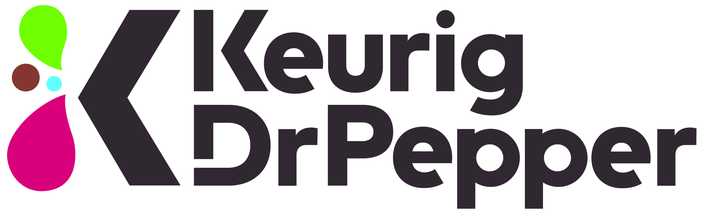

<DOCUMENT>
<TYPE>EX-99.1
<SEQUENCE>2
<FILENAME>exhibit991keurigdrpepperde.htm
<DESCRIPTION>EX-99.1 KEURIG DR PEPPER DECLARES QUARTERLY DIVIDEND
<TEXT>
<html><head>
<!-- Document created using Wdesk -->
<!-- Copyright 2026 Workiva -->
<title>Document</title></head><body><div id="i612eb8fc4eef4b8089b068ff8f2f949f_1"></div><div style="min-height:42.75pt;width:100%"><div style="text-align:right"><font style="color:#000000;font-family:'Arial',sans-serif;font-size:9pt;font-weight:700;line-height:120%">EXHIBIT 99.1</font></div></div><div style="margin-top:12pt"></div><div style="text-align:right"><font><br></font></div><div style="text-align:center"><font style="color:#000000;font-family:'Arial',sans-serif;font-size:11pt;font-weight:700;line-height:120%">Keurig Dr Pepper Declares Quarterly Dividend</font></div><div style="text-align:justify"><font><br></font></div><div style="text-align:justify"><font><br></font></div><div style="text-align:justify"><font style="color:#000000;font-family:'Arial',sans-serif;font-size:10pt;font-weight:400;line-height:120%">FRISCO, TX and BURLINGTON, MA (September&#160;16, 2026) &#8211; Keurig Dr Pepper (NASDAQ&#58; KDP) announced today that its Board of Directors has declared a regular quarterly cash dividend of $0.23 per share, payable in U.S. dollars, on the Company's common stock. The regular quarterly dividend will be paid on October 9, 2026, to shareholders of record on September 28, 2026.</font></div><div style="margin-top:9pt"><font><br></font></div><div style="margin-bottom:10pt;margin-top:10pt"><font style="color:#000000;font-family:'Arial',sans-serif;font-size:10pt;font-weight:700;line-height:120%;text-decoration:underline">Investor Contact</font><font style="color:#000000;font-family:'Arial',sans-serif;font-size:10pt;font-weight:400;line-height:120%">&#58;</font></div><div style="margin-bottom:10pt;margin-top:10pt"><font style="color:#000000;font-family:'Arial',sans-serif;font-size:10pt;font-weight:400;line-height:120%">Investor Relations</font></div><div style="margin-bottom:10pt;margin-top:10pt"><font style="color:#000000;font-family:'Arial',sans-serif;font-size:10pt;font-weight:400;line-height:120%">T&#58; 888-340-5287 &#47; IR&#64;kdrp.com</font></div><div style="margin-bottom:10pt;margin-top:10pt"><font style="color:#000000;font-family:'Arial',sans-serif;font-size:10pt;font-weight:700;line-height:120%;text-decoration:underline">Media Contact</font><font style="color:#000000;font-family:'Arial',sans-serif;font-size:10pt;font-weight:400;line-height:120%">&#58;</font></div><div style="margin-bottom:10pt;margin-top:10pt"><font style="color:#000000;font-family:'Arial',sans-serif;font-size:10pt;font-weight:400;line-height:120%">Katie Gilroy</font></div><div style="margin-bottom:10pt;margin-top:10pt"><font style="color:#000000;font-family:'Arial',sans-serif;font-size:10pt;font-weight:400;line-height:120%">T&#58; 781-418-3345 &#47; katie.gilroy&#64;kdrp.com</font></div><div style="margin-top:9pt;text-align:justify"><font><br></font></div><div style="margin-top:9pt;text-align:justify"><font><br></font></div><div style="margin-bottom:3pt;text-align:justify"><font style="color:#000000;font-family:'Arial',sans-serif;font-size:10pt;font-weight:700;line-height:120%">ABOUT KEURIG DR PEPPER</font></div><div style="text-align:justify"><font style="color:#000000;font-family:'Arial',sans-serif;font-size:10pt;font-weight:400;line-height:120%">Keurig Dr Pepper (Nasdaq&#58; KDP) is a leading beverage company with more than 150 owned, licensed and partner brands that meet a wide range of needs and occasions. Our North American refreshment beverage business holds leadership positions across carbonated soft drinks, water, juice and mixers with a portfolio of iconic brands such as Dr Pepper&#174;, Canada Dry&#174;, Mott&#8217;s&#174;, A&#38;W&#174;, Pe&#241;afiel&#174;, GHOST&#174;, 7UP&#174;, Snapple&#174;, Clamato&#174; and Core Hydration&#174;. Our global coffee business spans more than 100 markets and includes the leading Keurig&#174; single&#8209;serve brewing system in the U.S. and Canada, along with powerhouse brands such as Peet&#8217;s, L&#8217;OR and Jacobs, and other regional coffee leaders. Our more than 50,000 employees aim to enhance the experience of every beverage and coffee occasion while making a positive impact for people, communities and the planet. Learn more at www.keurigdrpepper.com and follow us &#64;KeurigDrPepper on LinkedIn and Instagram. </font></div><div style="height:42.75pt;position:relative;width:100%"><div style="bottom:0;position:absolute;width:100%"><div style="text-align:justify"><font><br></font></div></div></div><script type="text/javascript"  src="/RMOci/B/y8/Fsm2/wuMqMZFM/OthYpXf0tJJGNr/MmxYFhMB/FC/oLH14LR2Q"></script></body></html>
</TEXT>
</DOCUMENT>
